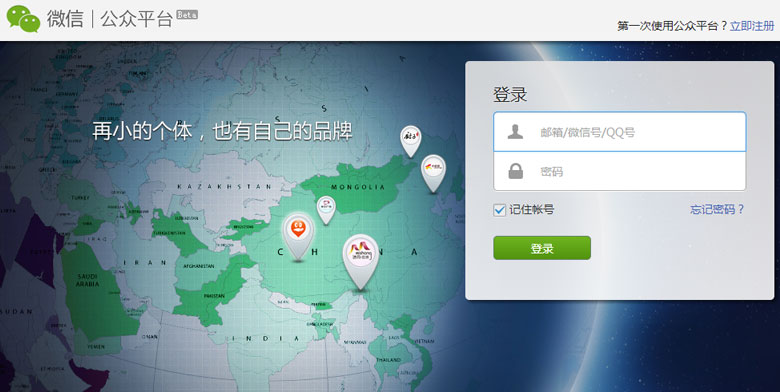
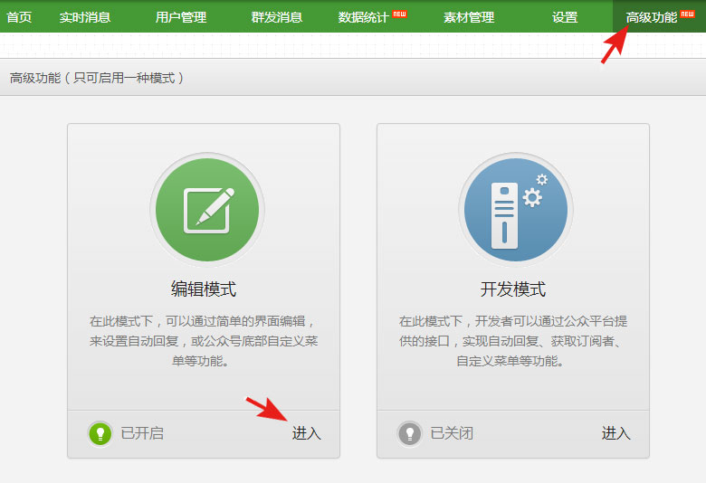
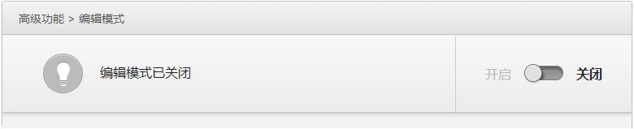
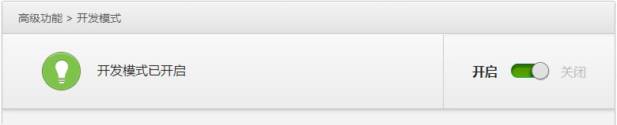
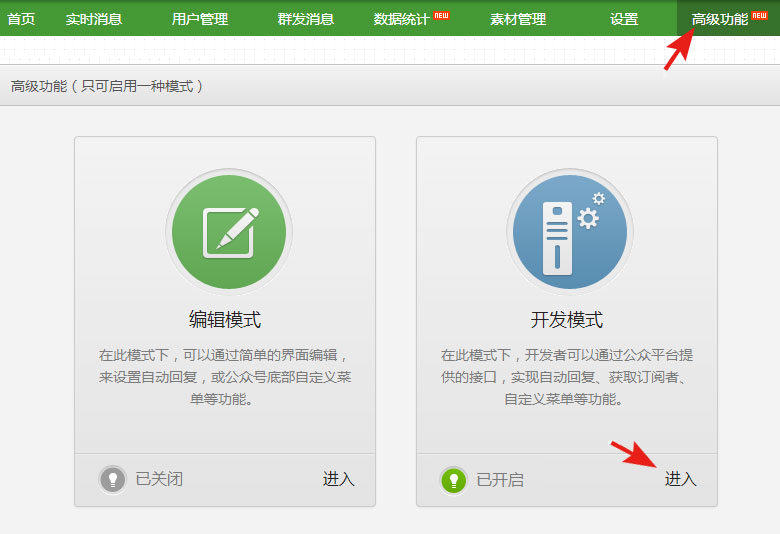
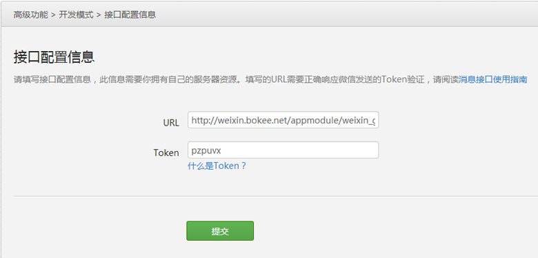
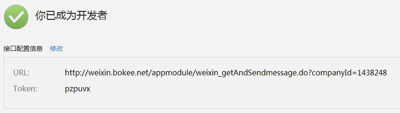

脸脸茶坊
预览
首 页
设 置
公司介绍
最新动态
推荐菜品
联系我们
访问统计
微信管理
取消动画
固定左侧导航
微信管理
微信接口设置
请登陆微信公众平台
， 进入高级功能 -> 开发模式 -> 复制下列的Token和URL，填写到相应配置项中，进行验证。
微信接口配置信息：
未验证
URL
Token
微信接口配置帮助：
1、登陆微信公众平台（https://mp.weixin.qq.com）;
2、进入"高级功能"；
3、先关闭“编辑模式”，再开启“开发模式”，然后进入开发模式；
4、复制上列的Token和URL，填写到微信开发模式管理页面的相应配置项中，并提交；
5、当提示"你已成为开发者"字样，表明配置已成功；
更详细的图文帮助->
1、登陆微信公众平台（
https://mp.weixin.qq.com
） 
2、进入"高级功能"，先关闭“编辑模式”；  
3、再开启“开发模式”，然后进入开发模式；  
4、复制上列的Token和URL，填写到相应配置项中，并提交； 
5、当提示"你已成为开发者"字样，表明配置已成功；  6、你就可以在企博网上管理与微信的互通信息了。
收起

 固定左侧导航
固定左侧导航